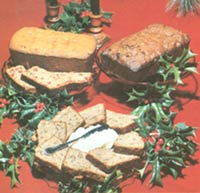

You can "sweeten" the festive season - naturally - by baking one (or all!) of these...
My family is trying faithfully to make the switch to a diet of natural, unrefined foods . . . but - in spite of our good intentions - it's all too easy to want to backslide during the holiday season. It seems that temptation is especially strong at this time of year, because many of our memories of past Thanksgiving and Christmas celebrations center on food: delectable mincemeat pies ... warm, oven-fresh gingerbread men . . . sweet fruitcakes . . . and peppermint candy canes hidden in stockings. The holidays just aren't quite complete without some traditional goodies, and we're apt to feel a bit cheated if we don't enjoy at least one sugary morsel.
So, to ease my family's "withdrawal" pains (which are particularly hard on the children), I invented several natural , sugarfree holiday treats. Since the delicious bread recipes printed here contain only nutritious whole grains and natural sweeteners, merrymakers can enjoy them with a clear conscience. What's more, my two-bowl mixing method is so easy that you can get the whole gang involved in the culinary process . . . and that sort of group activity is a real "holiday helper" in itself, since half the fun of the festive time of year is the special spirit that results from doing things as a family.
This sweet bread will be only as flavorful as the fruit you use to prepare it . . . so find a small pie pumpkin that's been field ripened and has thick, dark flesh. Wash and dry the outside, then cleave it in half and carefully scoop out the seeds. Place both halves (cut sides down) on a cookie sheet, and bake them at 350°F for about an hour . . . or until the meat is very soft (you can test it with a fork) and the rind is somewhat browned. After the pieces cool, scrape the pulp from the shells with a spoon and purée it in a blender (or put it through a food mill). Now the pumpkin is ready to be used in my "pet" recipe.
To begin, grease a standard (3-1/2" X 5" X 9") loaf pan with cold-pressed safflower oil, and dust it tightly with whole wheat flour. Then - in the first mixing bowl - blend 1 egg with 1 cup of maple syrup and 1/2 cup of safflower oil . . . add 1 cup of the cooked, puréed pumpkin . . . and beat the ingredients well.
Using a second - larger - container, mix 2 cups of whole wheat flour (don't sift it, or you'll lose the bran), 1/4 teaspoon of salt, 1/4 teaspoon of baking soda, 1 teaspoon of cinnamon, and 1/2 teaspoon each of cloves, nutmeg, and baking powder. Stir the contents of the first bowl into the dry ingredients in the second, and then add 1 teaspoon of pure vanilla extract and 2/3 cup each of raisins and chopped nuts. Pour the batter into the pan, and bake it at 350°F for 45 minutes ... then turn the oven down to 300°F for another 45 minutes. Cool the bread in the tin before removing and slicing it.
You'll need four or five very ripe (soft!) bananas to make this delicious loaf . . . so it's best to keep the fruits at room temperature for several days before you plan to start cooking. When you're ready to make the bread, cream 1/3 cup of butter with 1 egg and 1 cup of maple syrup . . . and, once those ingredients are well blended, add 1 cup of mashed bananas.
Then - in another bowl - mix together the dry ingredients: 2 cups of whole wheat flour, 3 teaspoons of baking powder, 1/2 teaspoon of baking soda, and 1/2 teaspoon of sea salt. Slowly stir the banana-egg-syrup mixture into the flour, and add 1 cup of chopped walnuts.
Pour the batter into a well-greased loaf pan (of the same size as that used when preparing Pumpkin Bread). If you want the finished creation to have an even top, use a knife to "mound" the batter slightly around the edges of the pan (since it tends to rise faster in the center). Bake your confection for 25 minutes at 350°F . . . then at 300°F for another 30 minutes (or until a toothpick inserted in the bread's center comes out clean). If you let the banana nut loaf cool slowly in the pan, it will slice more easily . . . but we usually can't wait, and divide up the fragrant bread as soon as it comes out of the oven!
To make a tart and tasty dessert treat, mix together 2 cups of whole wheat flour, 1 tablespoon of baking powder, 1 teaspoon of baking soda, and 1 teaspoon of sea salt. Cut 1/4 cup of butter into the dry ingredients until the mixture has the texture of cornmeal.
In the smaller bowl, blend 3/4 cup of orange juice with a well-beaten egg and 1/2 cup of honey. Then pour the liquids - all at once - into the dry ingredients, and stir the resulting mix only enough to blend everything well before folding in 1/2 cup of chopped walnuts and 1 cup of fresh, chopped cranberries.
Finally, pour the batter into a well-oiled loaf pan, push it up slightly around the sides, and bake it for an hour at 350°F. The youngsters may be dubious about the "new" dessert at first . . . but after one slice, they'll attack the bread with such enthusiasm that you'll probably have to make another loaf before the holidays are over!
|
 |
|
|